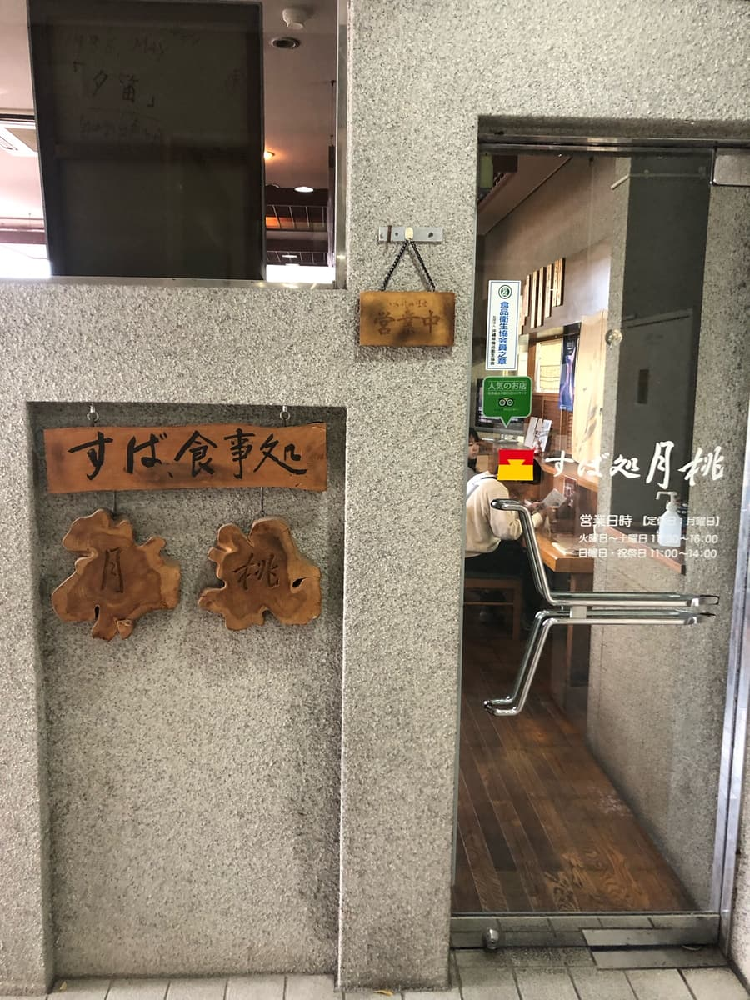
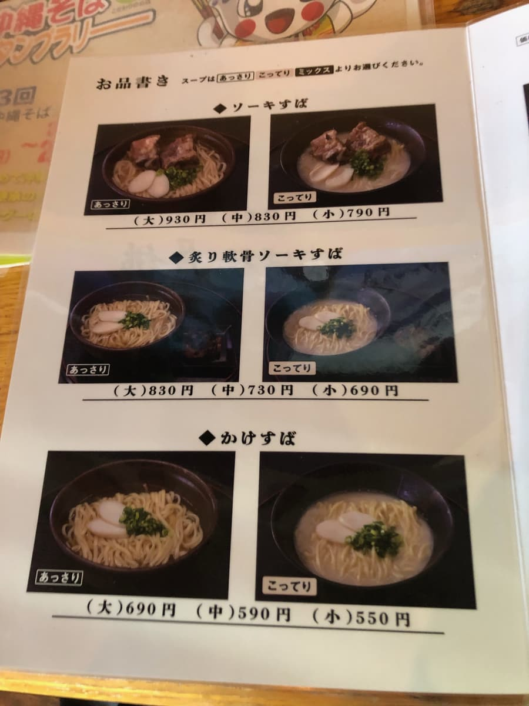
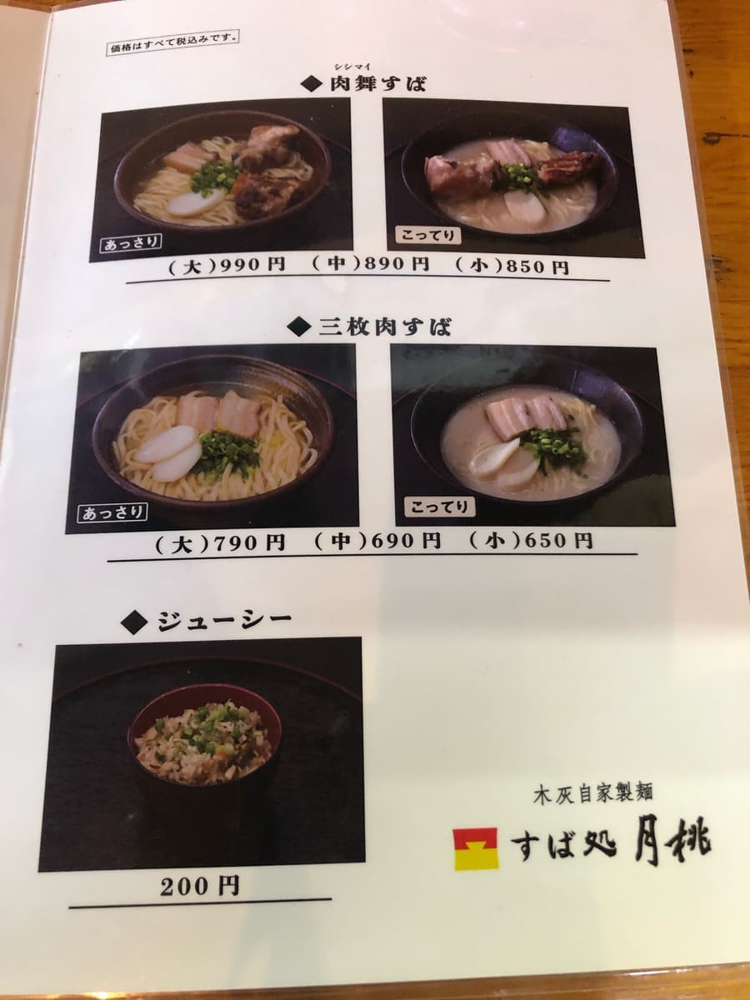
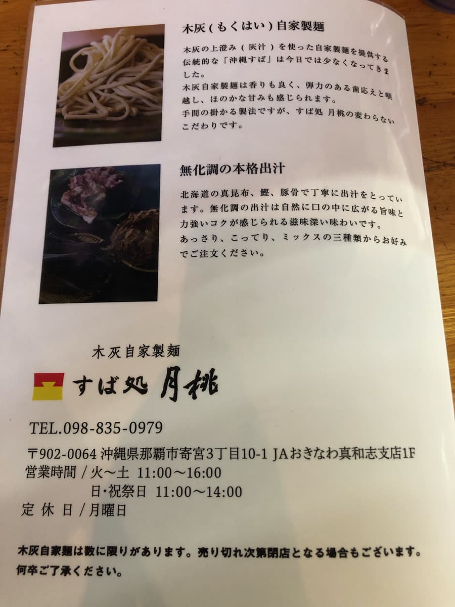
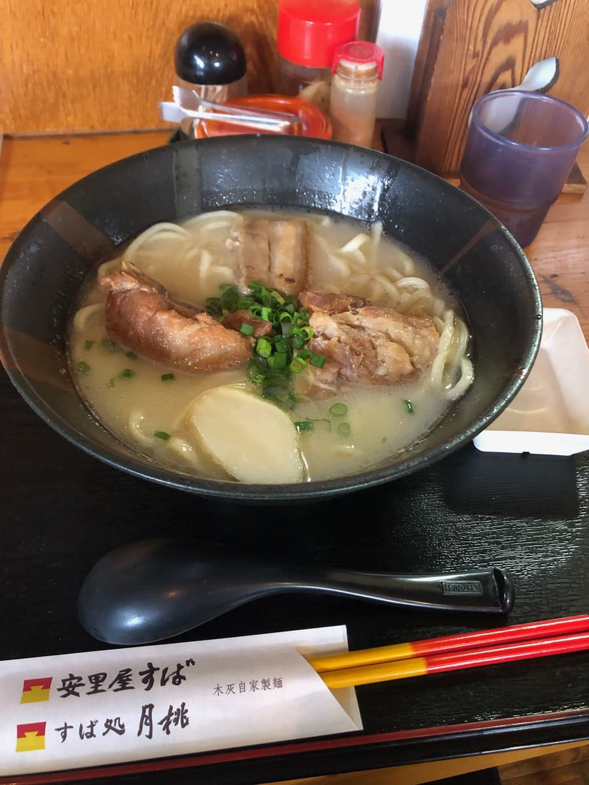
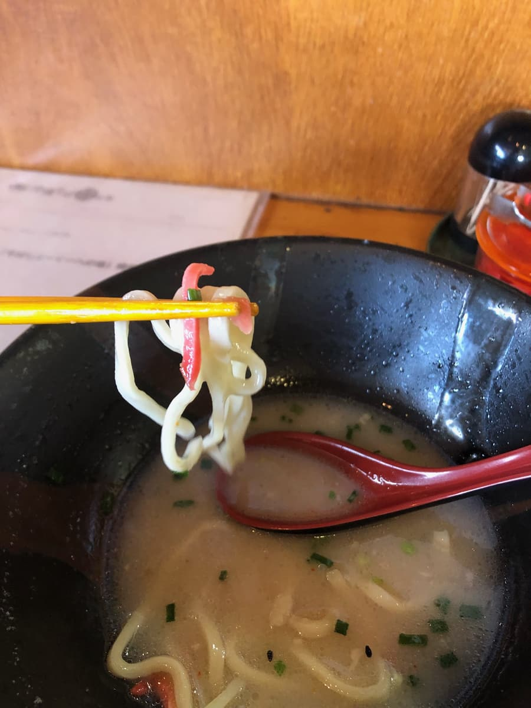

2023년 11월에 먹었습니다. 이 가게는 “제13회 오키나와 소바 스탬프 랠리(2023.10.1~2024.2.29)” 참가점으로, 34개 가게 중 23번째 가게로 다녀왔어요😊

이 가게는 단독 주택이 아니라 빌딩 같은 건물 1층에 들어가 있는 느낌이었어요. 주소로 보면 JA 건물일까요?
휴일 점심시간인데 문을 열고 들어가 보니 놀랍게도 만석(*_*) 현지 손님들에게 엄청 사랑받는 가게구나 싶었어요.
하지만 오키나와 소바니까 회전이 빠를 거라 생각해서 조금 기다리기로 했어요. 그러자 몇 팀이 나가서 무사히 가게 안으로 🤗
주문은 스탬프 랠리 책자에서 소개하던 “시시마이 소바(진한 맛)”를 주문. 점원분께 책자를 가리키며 “니쿠마이 소바, 진하게요”라고 말했더니 “시시마이 소바, 진하게요, 맞죠”라고. 읽는 법이 틀렸네요. 오키나와 방언으로 고기는 “시시”군요(;^ω^) 실례했습니다 ㅋㅋ



기다리는 동안 메뉴판을 체크. 이곳은 목회(나무재)의 윗물(잿물)을 사용한 자가제면이라고 해요.
목회 면은 나고의 “무카시무카시”에서 “히쟈(염소) 소바”를 먹은 이후 처음일지도 몰라요.
그런데 주문하고 한참이 지나도 좀처럼 나오지 않아요. 다른 가게도 만석이어도 그럭저럭 나오는 시간이 있는데, 이 가게는 좀처럼 나오지 않았어요(;^ω^)
연세 지긋한 여성 두 분이서 운영을 돌리는 것 같아서 힘들어 보이네요(;^ω^)


드디어 나왔어요. 먼저 국물이죠. 국물은 설명에 따르면 “홋카이도의 마곤부, 가쓰오, 돼지뼈로 정성껏 육수를 냈습니다. 화학조미료 무첨가 육수는 자연스럽게 입안에 퍼지는 감칠맛과 힘 있는 깊은 맛이 느껴지는, 몸에 스며드는 맛입니다.”라고 해요😁
한 모금 마시니 진한 돼지뼈 육수가 우러나 있어요. 부드럽네요. 아구 육수의 가메 소바나 전날 먹은 “쓰키쿠루치”의 진한 돼지뼈 육수보다도 진하고 맛있다고 생각해요. 다만 짠맛도 약간 강하게 나요.
국물은 부드럽고 진해서 맛있다고 생각하지만, 역시 추천 가게로 소개한 “796 난쿠루”에는 이기지 못하네요😊
다음은 면을 먹어 봅니다. 중간 가는 스트레이트 타입이에요. 설명에는 “목회 자가제면은 향도 좋고, 탄력 있는 씹는 맛과 목넘김, 은은한 단맛도 느껴집니다.”라고 해요.
하지만 먹어 보니 목회의 향이나 맛은 느껴지지 않았고, 전에 먹은 나고시의 “무카시무카시” 쪽이 풍미가 있었다고 생각해요.
다만 면 자체는 매끈매끈하고 보통으로 맛있다고 생각해요. 이쪽 면도 짠맛이 조금 강하게 나오네요.
고명은 삼겹살 조림, 연골 돼지갈비, 뼈 있는 돼지갈비(혼소키)로 푸짐하지만, 뼈 있는 돼지갈비는 약간 힘줄 같은 질긴 식감이 있고 퍽퍽함이 느껴졌어요.
평가(9.5점/15점): 보통으로 맛있어요. 돼지뼈 국물은 꽤 부드럽고 맛있지만 짠맛도 조금 강한 편이에요. 면도 매끈매끈하고 보통으로 맛있지만, 이쪽도 짠맛이 강하게 나요. 만석일 때의 운영은 조금 아쉽네요.
면: ★★★☆☆（3）
수프: ★★★✬☆（3.5）
토핑: ★★★☆☆（3）